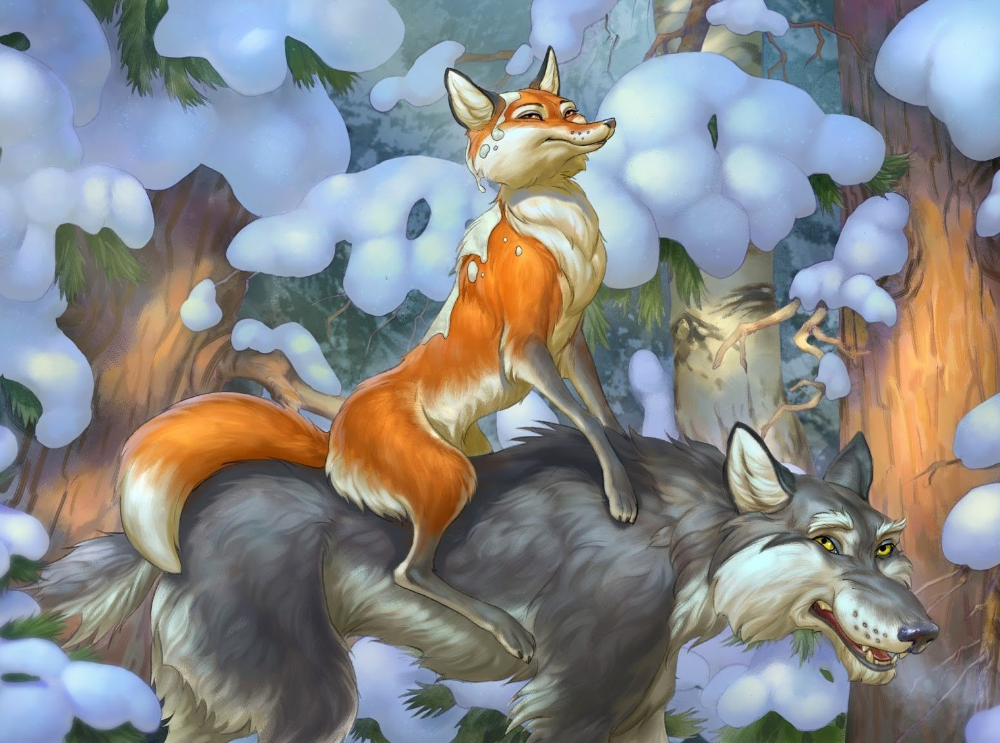

Лиса и волк

Жили себе дед да баба. Дед говорит бабе:
— Ты, баба, пеки пироги, а я запрягу сани, да поеду за рыбой.
Наловил рыбы и везет домой целый воз. Вот едет он и видит: лисичка свернулась калачиком и лежит на дороге. Дед слез с воза, подошел к лисичке, а она не ворохнется, лежит себе как мертвая.
— Вот будет подарок жене, — сказал дед, взял лисичку и положил на воз, а сам пошел впереди.
А лисичка улучила время и стала выбрасывать полегоньку из воза все по рыбке да по рыбке, все по рыбке да по рыбке. Повыбросила всю рыбку и сама ушла.
— Ну, старуха, — говорит дед, — какой воротник привез я тебе на шубу!
— Где?
— Там, на возу, — и рыба и воротник.
Подошла баба к возу: ни воротника, ни рыбы — и начала ругать мужа:
— Ах ты! Такой-сякой! Ты еще вздумал обманывать!
Тут дед смекнул, что лисичка-то была не мертвая. Погоревал, погоревал, да делать-то нечего.
А лисичка собрала всю разбросанную рыбу в кучку, уселась на дорогу и кушает себе. Приходит к ней серый волк:
— Здравствуй, сестрица!
— Здравствуй, братец!
— Дай мне рыбки!
— Налови сам да и кушай.
— Я не умею.
— Эка, ведь я же наловила! Ты, братец, ступай на реку, опусти хвост в прорубь, сиди да приговаривай: «Ловись, рыбка, и мала и велика! Ловись, рыбка, и мала и велика!» Рыбка к тебе сама на хвост нацепится. Да смотри сиди подольше, а то не наловишь.
Волк и пошёл на реку, опустил хвост в прорубь и приговаривает:
— Ловись, рыбка, и мала и велика!
— Ловись, рыбка, и мала и велика!
Вслед за ним и лиса явилась: ходит около волка да причитывает:
— Ясни, ясни на небе звёзды!
— Мёрзни, мёрзни, волчий хвост!
— Что ты, лисичка-сестричка, говоришь?
— То я тебе помогаю.
А сама плутовка поминутно твердит:
— Мёрзни, мёрзни, волчий хвост!
Долго-долго сидел волк у проруби, целую ночь не сходил с места, хвост его и приморозило; пробовал было приподняться; не тут-то было!
«Эка, сколько рыбы привалило — и не вытащишь!» — думает он.
Смотрит, а бабы идут за водой и кричат, завидя серого:
— Волк, волк! Бейте его! Бейте его!
Прибежали и начали колотить волка — кто коромыслом, кто ведром, кто чем попало. Волк прыгал, прыгал, оторвал себе хвост и пустился без оглядки бежать.
«Хорошо же, — думает, — уж я тебе отплачу, сестрица!»
Тем временем, пока волк отдувался своими боками, лисичка-сестричка захотела попробовать, не удастся ли ещё что-нибудь стянуть. Забралась в одну избу, где бабы пекли блины, да попала головой в кадку с тестом, вымазалась и бежит. А волк ей навстречу:
— Так-то учишь ты? Меня всего исколотили!
— Эх, волчику-братику! — говорит лисичка-сестричка. — У тебя хоть кровь выступила, а у меня мозг, меня больней твоего прибили: я насилу плетусь.
— И то правда, — говорит волк, — где уж тебе, сестрица, идти, садись на меня, я тебя довезу.
Лисичка села ему на спину, он её и повёс.
Вот лисичка-сестричка сидит, да потихоньку и говорит:
Битый небитого везёт,
Битый небитого везёт!
— Что ты, сестрица, говоришь?
— Я, братец, говорю: «Битый битого везёт».
— Так, сестрица, так!